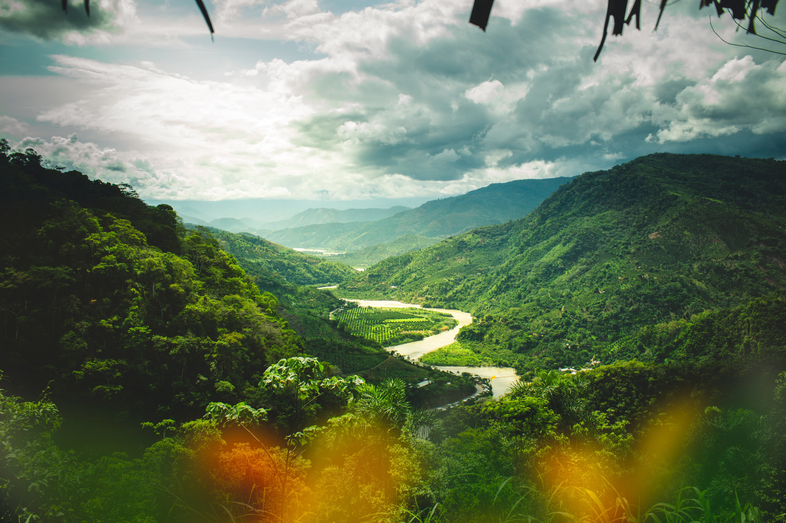
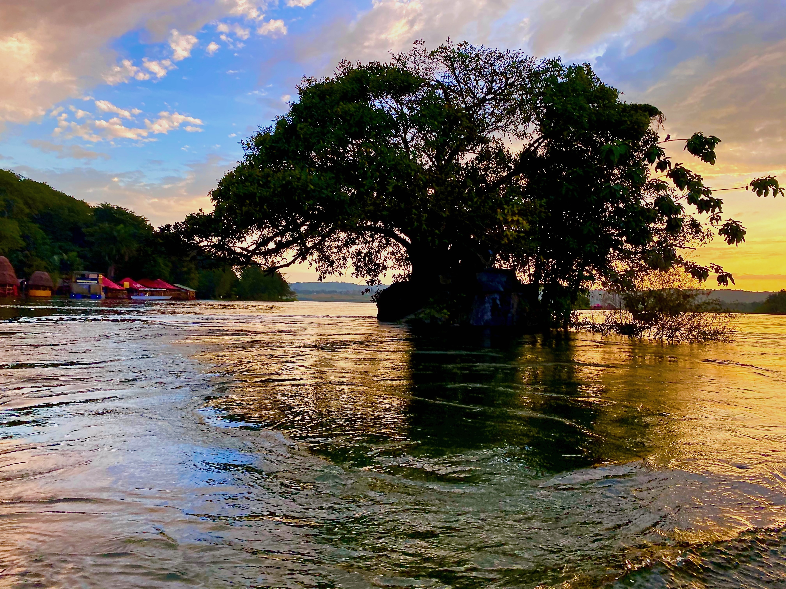

Explore Exciting Trips
Ready to experience the thrill of a lifetime? Dive into the heart-pounding adventure of white water rafting with us! Our expert guides will take you on an unforgettable journey through some of the most exhilarating rapids, surrounded by breathtaking natural beauty. Whether you're an adrenaline junkie or seeking a memorable group adventure, our white water rafting trips have something for everyone. Get your paddle ready, and let's make a splash together. Book your adventure now, and get ready to conquer the rapids and create memories that will last a lifetime!
Contact UsTrip 1: Peru
White water rafting in Peru is the ultimate adventure, where you'll navigate thrilling class III to V rapids amidst the breathtaking Andes Mountains and lush rainforests. Each twist in the river reveals a stunning vista, with snow-capped peaks, ancient Incan ruins, and vibrant wildlife. Expert guides blend exhilaration with cultural immersion, and after conquering the rapids, you'll unwind in cozy camps with delicious Peruvian cuisine. It's a journey that seamlessly fuses adrenaline, natural beauty, and rich heritage, promising lifelong memories and an enduring connection to Peru's untamed heart. Book your trip now for the adventure of a lifetime.
Trip 2: Salmon River
Rafting down the Salmon River is a journey through the heart of pristine wilderness. As you navigate the sparkling waters, you'll be surrounded by the rugged beauty of Idaho's untouched landscapes. The Salmon River, often called the "River of No Return," offers a mix of calm stretches and exhilarating class III and IV rapids, ensuring an adventure suitable for all levels of experience. The backdrop is a breathtaking panorama of deep canyons, dense forests, and abundant wildlife. Friendly and knowledgeable guides enhance the experience, sharing the region's history and lore. After each day's thrilling ride, you'll relax at riverside camps, under the star-studded Idaho sky, with hearty meals and camaraderie by the campfire. The Salmon River adventure is a blend of adrenaline, nature's grandeur, and outdoor camaraderie that promises unforgettable memories. Whether you're a seasoned rafter or a first-timer, booking a trip on the Salmon River is your gateway to the ultimate river adventure.

Trip 3: Nile River
Cruising along the Nile River is a voyage through history and wonder. This legendary river, the lifeblood of ancient Egypt, winds its way through the desert, revealing the secrets of the pharaohs and the beauty of the Nile Valley. As you gently float on its tranquil waters, you'll be immersed in the rich tapestry of Egypt's past and present. The sights are nothing short of awe-inspiring, from the towering pyramids and Sphinx of Giza to the grand temples of Luxor and the vibrant markets of Aswan. Knowledgeable guides unveil the stories of this captivating land, and the timeless allure of the Nile's landscapes, palm-fringed oases, and vibrant local culture. After days filled with exploration, you'll retire to luxurious riverboats, indulging in Egyptian cuisine and gazing at the stars from the comfort of your deck. A Nile River cruise is a captivating blend of history, beauty, and indulgence, promising memories that will last a lifetime. Whether you're a history enthusiast or simply seeking a unique adventure, booking a journey along the Nile is your ticket to an extraordinary and unforgettable experience.
Trip Information
| Trip Name | Duration | Price |
|---|---|---|
| Trip 1: Peru | 7 days | $1500 |
| Trip 2: Salmon River | 5 days | $500 |
| Trip 3: Nile River | 10 days | $2000 |